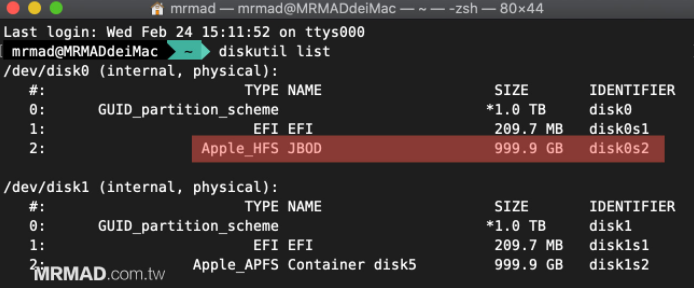

如何确认目前Mac 电脑所用的SSD 寿命和健康度还剩多久呢？
安装工具smartmontools
1 | brew install smartmontools |
通过diskutil list指令来查询SSD硬盘设备标签代码

或者打开磁盘管理工具查看：

执行命令
注意命令里面的disk1s1换成你自己的标识符。
1 | smartctl -a disk1s1 |

至于SMART 工具里面显示的数据可对照底下说明：
- 严重警告（Critical Warning）：会显示控制器状态警告讯息，如果都显示0x00 就表示没事
- 温度（Temperature）：会显示当前SSD 温度资讯
- 可用备用空间（Available Spare）：SSD 剩余空间百分比
- 可用备用临界值（Available Spare Threshold）：临界值全由厂商定义
- 寿命百分比（Percentage Used）：目前SSD 寿命百分比数值，具体取决于实际设备使用情况和厂商对设备寿命的预测。
- 资料读取（Data Units Read）：记录电脑从SSD读取512字节数据单元的总量，每1000个单元记录一次，即这项Raw数据1的值等于500KB。
- 资料写入（Data Units Read）：如上，就是写入总量。
- 主机读取命令（Host Read Commands）：主控收到的读取命令数量。
- 主机写入命令（Host Write Commands）：主控收到的写入命令数量。
- 控制器忙碌时间（Controller Busy Time）：主控忙于I/O命令的时间。
- 意外关机（Unsafe Shutdowns）：纪录不正常断电次数
- 媒体和资料完整性错误（Media and Data Integrity Errors）：主控检测得到的未恢复的数据完整性错误次数。
- 错误资料纪录（Number of Error Information Log Entries）：主控总共收到的错误信息日志数量。
通常我们主要确认「寿命百分比（Percentage Used）」这项数值就好，通常达到90%以上就要额外注意。